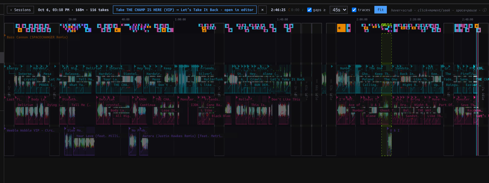
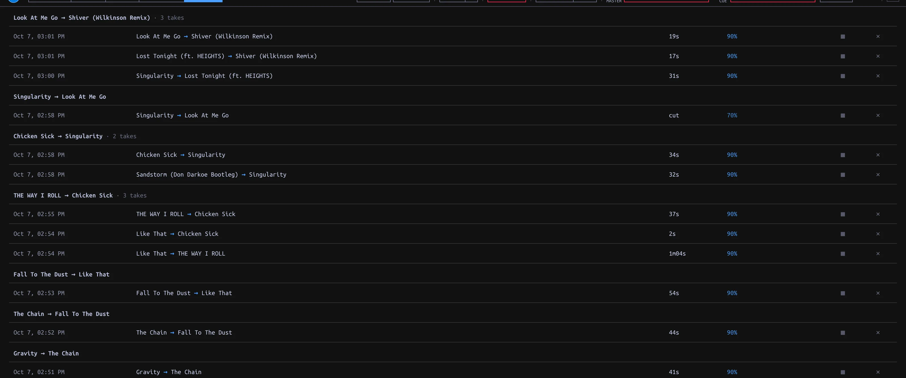

Review Sessions and Takes
Replay performance events, inspect detected handovers, and promote chosen evidence.
On this page

What capture keeps
Capture runs during live Performance without a Record button. A Session opens on the first Master-audible Deck instant. Silent loads and headphone-only Cue do not start it; ten uninterrupted minutes without Master-audible activity end it. The next live audible stretch starts another Session. Sessions store transport and control events, not audio; replay needs the Library Tracks. Editor auditions and Conductor playback show as machine-held stretches, not captured performances. A short Master-audible preview can keep a Session active without counting as a played Track or a Take.
| Record | Scope | How to find it |
|---|---|---|
| Session | Whole stretch of live Deck/Mixer events, across up to four Decks | Library sidebar ▦ Sessions |
| Take | Detected pair handover inside an engagement | Session timeline or top-bar ⋯ → HISTORY |
| Cameo Take | Guest comes and goes while host remains current | Session timeline/history; not an ordinary handover Transition |
| Routine Take | Confirmed multi-Track passage | Session candidate controls and Mix editor review |
Open and replay a Session
- Choose ▦ Sessions in the sidebar. The list groups by day, longest first; rows show time, duration, Master-audible Track count and Take count. Choose Open timeline. ‹ Sessions returns to the list.
- Read the physical Deck lanes C, A, B, D and Track labels. Waveforms show played portions; height indicates Master gain. Hover for a moment's readout, then click a moment to select it. fit frames the Session. Horizontal wheel/trackpad pans; vertical wheel zooms around the cursor.
- At the selected moment press ▶ beside its timestamp to replay recorded events through the shared live Decks. Pause/resume or ■ Stop replay; Space toggles pause. A manual Deck or Mixer gesture ends replay and takes over. Replay is not new captured evidence.
- Use gaps ≥ to choose the minimum collapsed gap (30s, 45s, 2m or 5m); click a collapsed gap to expand it. traces toggles transport traces. Machine-controlled gaps contain tenure markers rather than the machine's individual control events.

Selected Take exposes open in editor above four physical Deck lanes and the collapsed gaps.
Deleting a Session from the list removes its event timeline and mined candidates, not its persisted Takes; the row says Delete this Session (Takes are kept). Confirm what provenance you need before deleting; this action is not an editing shortcut.
Find and review a Take
A handover Take is detected only when the incoming Track becomes Master-audible and the outgoing eventually stays silent. Brief returns can belong to the same engagement; not every blend yields a Take. If the guest ends while the host continues, the evidence is a Cameo Take instead. Headphone Cue and automated playback cannot create handover Takes.
Click a Take chip on the Session timeline, then open in editor. Or choose top-bar ⋯ → HISTORY to browse engagements by time, window, confidence and promotion state. The ▦ link jumps back to a source Session when present. A handover row opens an editable REVIEW draft in the Mix editor. Inspect and audition, then ↑ Promote to save a Transition; opening it alone creates no library Transition. The Take remains evidence. A Cameo Take in history currently links back to its Session rather than launching the same handover review flow.

Engagement-grouped Take history with duration, confidence and source Session links.
Multi-Track candidates
The Session timeline can surface mined Routine candidates. Select one, trim its proposed span and inspect its cast. Confirm Routine Take retains a chosen passage as evidence; Promote turns a reviewed Routine Take into a saved Routine. If trimming a selected candidate leaves two Tracks, Cut Take instead offers pair evidence. This is not a general drag-any-range cutting tool on the Session timeline. A candidate and its promoted artifact are different records; do not confuse a suggested span with a saved Routine.